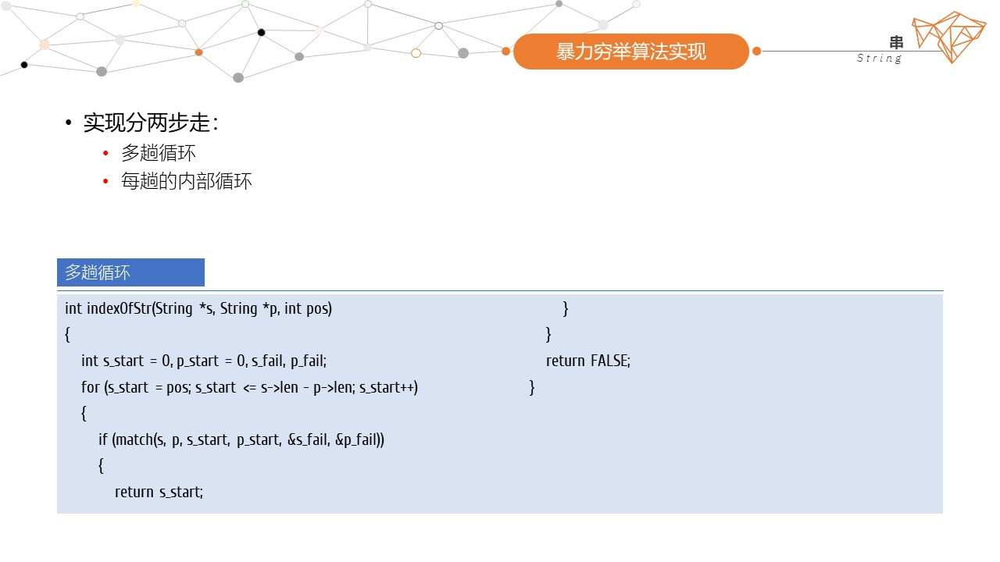
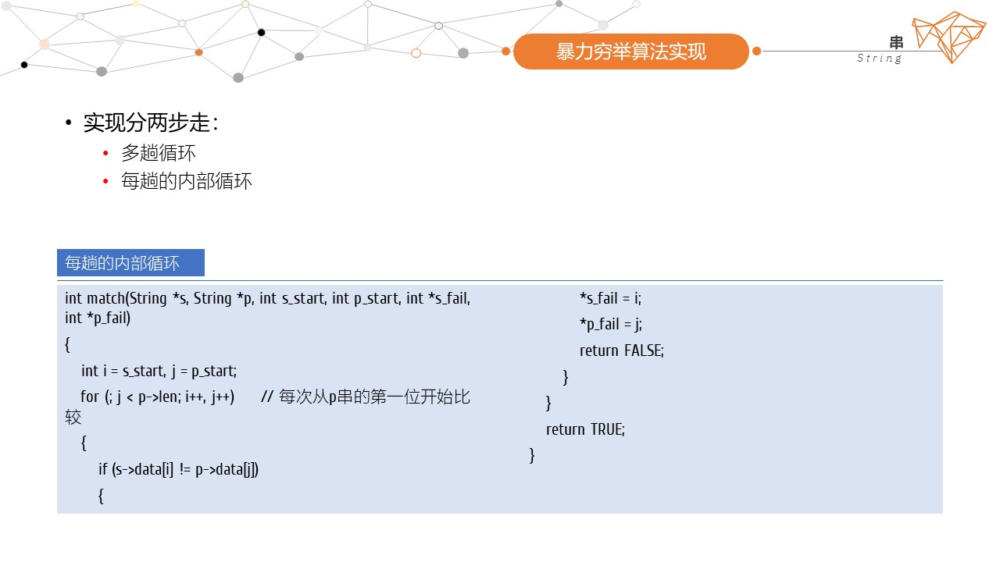

简介 Overview
- 1. 基本概念
- . 0个或多个字符char组成的有限序列
- . 是线性表的一个子集sub-set
- . 以双引号""包裹
- s="a0 a1 a2 a3 ... an-1"
-
"hi,there."//ok 'hi,there.'//error
- 2. 串长
- . 字符的个数，不包括结束标记符号’\0’
- . 空串:长度为0
-
"hello,world"//11 " "//1 ""//0
- 3. 串相等
- . 当且仅当两个串的长度相等，且对应的字符也相等
- . 所有空串都相等
-
"abc" ≠ "abcd" "abcd" ≠ "abcD" "abcde" = "abcde"
- 4. 子串
- . 串中任意个连续的字符组成的序列
- . 空串是任何串的子串
-
"hello,world" //"h" "hello" " " "" "hello,world" "lover" //"over" "believe" //"lie" "friend" //"end"
- []
- . C中没有字符串类型
- . 输出串时，应判断是否是结束标记，而不是判断串的长度
- . 更多信息，请访问字符串 String
- [Section End]
抽象数据类型 ADT
- 关注
- 线性表关注的是元素的插入、删除；串更多的是关注字串的位置、查找和替换；
顺序串 SeqString
- 1. 顺序串特点
- . 使用一组地址连续的存储单元[定长数组]存储字符序列
- . 静态存储：编译的时候就决定了串空间的大小
- . 修改慢：插入和删除需要移动大量元素
- . 访问快：按照索引随机访问
- . 使用比较灵活，没有栈、队列的使用约束
- 2. 数据结构
-
typedef struct { char data[maxSize]; int len; } String; - 3. 参考代码
-
#include <stdio.h> #include <stdlib.h> #define maxSize 20 #define TRUE 1 #define FALSE 0 #define ERROR -1 //串的数据结构 typedef struct { char data[maxSize]; int len; } String; //串的赋值 int assign(String *s, char *str) { int i; for (i = 0; *(str + i) != '\0'; i++) { i++; } if (i > maxSize) { return ERROR; } i = 0; while (*(str + i) != '\0') { s->data[i] = *(str + i); i++; } // MUST s->data[i] = '\0'; s->len = i; return TRUE; } void display(String *s) { puts(s->data); } //获取子串 String *substr(String *s, int i, int len) { String *str = (String *)malloc(sizeof(String)); str->len = 0; if (i < 0 || i > s->len || len < 0) { return str; } // 这个变量可以省略 int ind, j = 0; for ( ind = i; ind < i + len; ind++) { str->data[j] = s->data[ind]; j++; } // MUST str->data[j] = '\0'; str->len = j; return str; } //字符的位置 int indexOfCh(String *s, char ch) { if (!s->len) { return ERROR; } int ind, i; for ( i = 0; i < s->len; i++) { if (s->data[i] == ch) { return i; } } return ERROR; } //串的匹配 int match(String *s, String *p, int s_start, int p_start, int *s_fail, int *p_fail) { int i = s_start, j = p_start; // 从p串的第一位开始比较 for (; j < p->len; i++, j++) { if (s->data[i] != p->data[j]) { *s_fail = i; *p_fail = j; return FALSE; } } return TRUE; } //串的位置 int indexOfStr(String *s, String *p, int pos) { int s_start = 0, p_start = 0, s_fail, p_fail; for (s_start = pos; s_start <= s->len - p->len; s_start++) { if (match(s, p, s_start, p_start, &s_fail, &p_fail)) { return s_start; } } return ERROR; } //主函数 int main(void) { char *str0 = "hi, there. boy"; char *str1 = "th"; int res; String *s = (String *)malloc(sizeof(String)); String *p = (String *)malloc(sizeof(String)); assign(s, str0); assign(p, str1); display(s); display(p); res = indexOfStr(s, p, 0); printf("res=%d\n", res); // res=4 free(s); free(p); return 0; } - 4. 更多函数
-
赋值 assign() 串长 len() 清空串 clear() 销毁串 destroy() 显示串 display() 连接串 concat() 插入子串 insertStrAt() 查找子串 indexOfStr() 获取子串 subStr() 删除串 delStr() 删除指定位置的串 delStrAt() 替换串 replaceStr() 指定位置插入字符 insertChAt() 查找字符 indexOfCh() 查找2个字符 indexOfChs() 删除字符 delCh() 删除指定位置字符 delChAt() 修改指定位置字符 modChAt() 替换字符 replaceCh() 替换指定位置字符 replaceChAt() - [Section End]
链式串 LinkedString
- 1. 链式串特点
- . 节点存放的串可以是一个字符，也可以是多个字符
- . 节点的数据大小问题：通常只存储1个字符，浪费空间；存放多个字符，考虑到节点的大小适配
- . 节点的密度问题
- 2. 数据结构
-
//数据节点：以字符节点为例 typedef struct Node { char data; struct Node *next; } Node; //串 typedef struct { Node *head; int len; } String; - 3. 参考代码
-
#include <stdio.h> #include <stdlib.h> //串的数据结构 typedef struct Node { char data; struct Node *next; } Node; typedef struct { Node *head; int len; } String; //串的赋值：遍历字符串赋值 void assign(String *s, char *str) { Node *p, *pre = s->head; int i; for (i = 0; *(str + i) != '\0'; i++) { p = (Node *)malloc(sizeof(Node)); p->data = *(str + i); p->next = pre->next; pre->next = p; // MUST pre = p; } s->len = i; } //遍历串 void display(String *s) { Node *p = s->head->next; while (p) { printf("%c", p->data); p = p->next; } printf("\n"); } //其它函数略 //主函数 int main(void) { String *s = (String *)malloc(sizeof(String)); s->head = (Node *)malloc(sizeof(Node)); //以#表示头节点 s->head->data = '#'; s->head->next = NULL; s->len = 0; assign(s, "hi, there."); printf("%d\n", s->len); display(s); free(s); return 0; } - [Section End]
应用 Application

- 
- 
- [Section End]